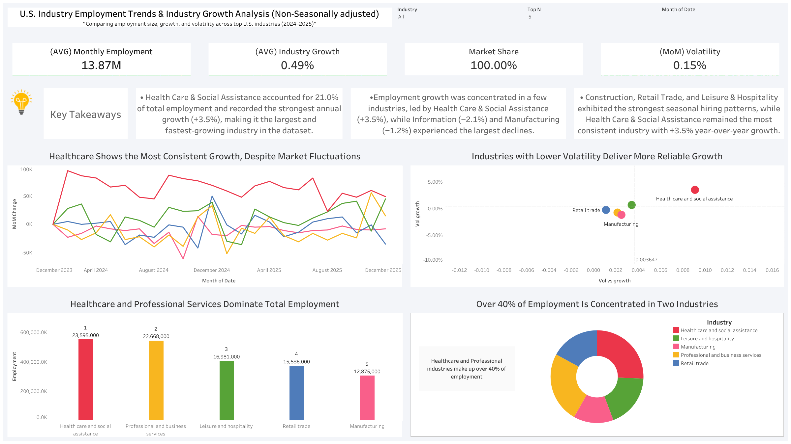
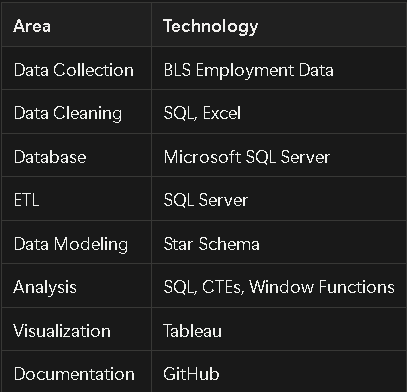
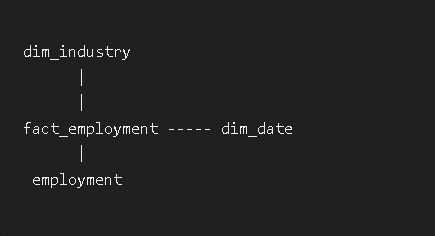

SQL Server • Tableau • Excel • ETL • Data Modeling

Understanding labor market trends is essential for workforce planning, economic forecasting, and strategic decision making. In this project, I analyzed benchmark-revised employment data from the U.S. Bureau of Labor Statistics (BLS) to uncover employment concentration, industry growth patterns, workforce stability, and seasonal hiring trends across major sectors of the U.S. economy.
To accomplish this, I developed a complete end-to-end analytics solution that included data extraction, transformation, database design, advanced SQL analysis, dimensional modeling, and interactive dashboard development.
The final result is a Tableau dashboard that transforms complex labor market data into actionable business insights.
Organizations, economists, and workforce planners rely on labor market data to understand economic conditions, workforce demand, and industry performance. However, large employment datasets can be difficult to interpret without proper analysis.
The goal of this project was to transform raw employment data into an analytical solution capable of answering key business questions:
By answering these questions, decision-makers can better understand workforce dynamics and identify meaningful labor market trends.
As the sole analyst on this project, I was responsible for the entire analytics lifecycle:
Source: U.S. Bureau of Labor Statistics (BLS)
Dataset: Benchmark-Revised CES Employment Data
Time Period: 2024–2025
Granularity: Monthly employment counts by industry


Advanced SQL techniques were used to uncover trends and generate business insights.
Used for:
Used to:
WITH base_data AS ( SELECT i.industry_name, d.date, d.month, d.year, f.employment * 1000 AS employment FROM fact_table AS f JOIN dimindustry AS i ON i.industry_id = f.industry_id JOIN dimDate AS d ON d.date_id = f.date_id ), lagged AS ( SELECT industry_name, date, month, year, employment, LAG(employment) OVER( PARTITION BY industry_name ORDER BY date ) AS prev_month, LAG(employment,12) OVER( PARTITION BY industry_name ORDER BY date ) AS prev_year FROM base_data ) -- Additional query continues...
This project transforms publicly available labor market data into an interactive analytical solution that helps users identify employment trends, workforce shifts, industry growth patterns, and seasonal hiring behavior.
By combining ETL processes, dimensional modeling, advanced SQL analysis, and data visualization, the project demonstrates how raw data can be transformed into meaningful business intelligence that supports workforce planning, economic analysis, and strategic decision-making.
This project demonstrates my ability to execute the complete data analytics lifecycle—from acquiring and transforming raw data to designing scalable data models, performing advanced analytical calculations, and delivering actionable insights through interactive dashboards.
It showcases the technical, analytical, and business communication skills required to contribute effectively as a Data Analyst, Reporting Analyst, or Business Intelligence Analyst.